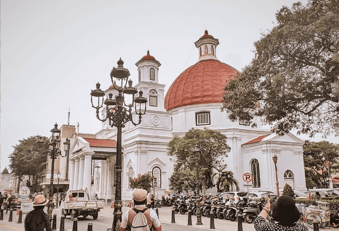
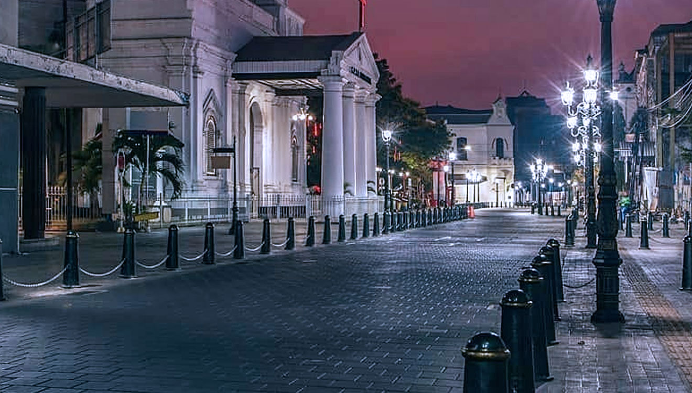

Kota Lama

Kota Lama Semarang (bahasa Jawa: ꦏꦸꦛꦭꦩꦱꦼꦩꦫꦁ, translit. Kutha Lama Semarang) adalah suatu kawasan di Semarang yang menjadi pusat perdagangan pada abad 19-20 . Pada masa itu, untuk mengamankan warga dan wilayahnya, kawasan itu dibangun benteng, yang dinamai benteng Vijhoek. Untuk mempercepat jalur perhubungan antar ketiga pintu gerbang dibenteng itu maka dibuat jalan-jalan perhubungan, dengan jalan utamanya dinamai: Heeren Straat. Saat ini bernama Jl. Let Jen Soeprapto. Salah satu lokasi pintu benteng yang ada sampai saat ini adalah Jembatan Berok, yang disebut De Zuider Por.

Di kawasan kota lama terdapat bangunan yang menjadi landmark atau ciri khas kawasan wisata ini, yaitu Gereja Blenduk. Gereja yang dibangun pada tahun 1753 ini awalnya dibuat dalam bentuk rumah joglo. Gereja tertua di Jawa Tengah ini kemudian direnovasi hingga menjadi seperti sekarang ini. Bentuk atap kubahnya yang cembung atau mblenduk merupakan asal-usul nama gereja tersebut.

Saat malam hari, kawasan ini menjelma menjadi kawasan unik meski kadang agak ngeri. Kamu bisa datang ke kawasan Gereja Bleduk, Mercusuar, Stasiun Semarang Tawang dan Jembatan Mberok.